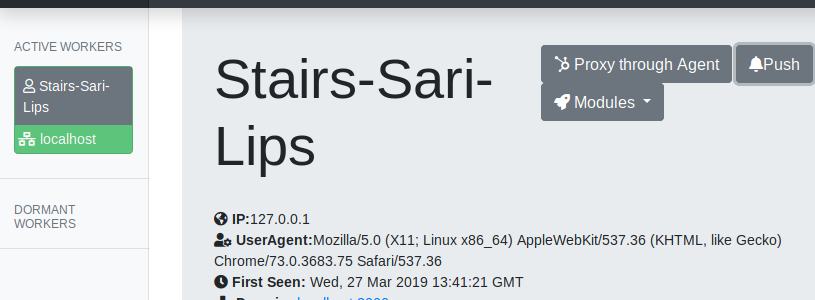
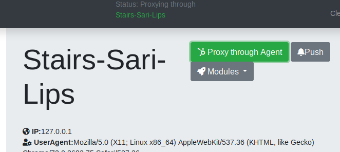
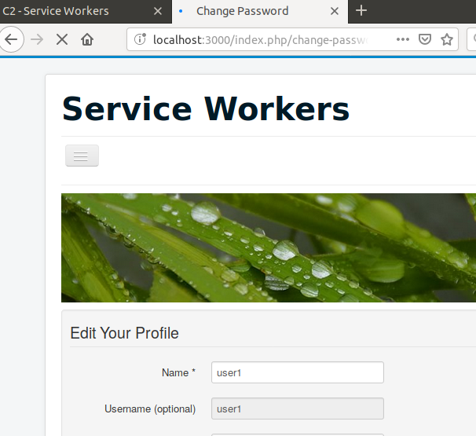
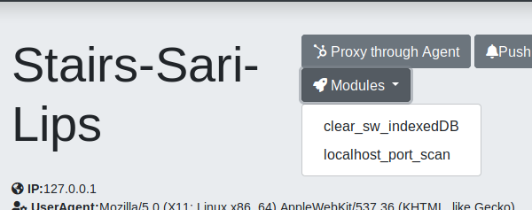
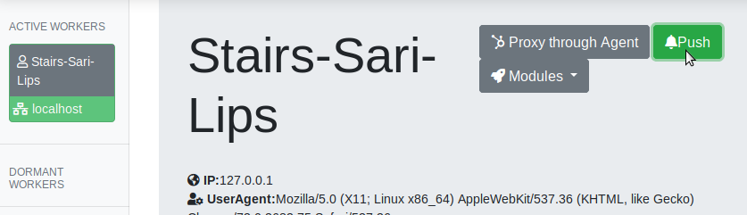
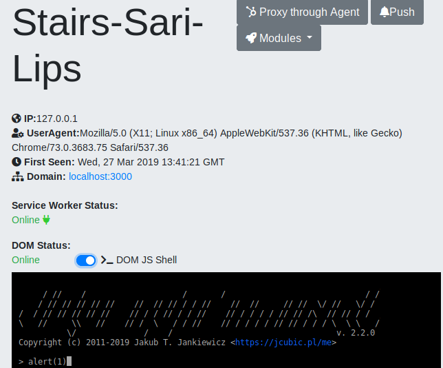

Register a domain and point it to an Internet facing host (C2).
Python 3
On the C2 host, go the folder where you want to store your project, clone the project and install the dependencies:
$ git clone https://github.com/shadow-workers/shadow-workers.git
$ cd shadow-workers
$ pip install -r requirements.txt
On the C2 host, generate SSL/TLS certificate using letsencrypt (or anything you prefer) and add copy the certificate (cert.pem) and key (key.pem) to the project folder:
$ cp fullchain.pem /path/to/shadow-workers/cert.pem
$ cp secretkey.pem /path/to/shadow-workers/key.pem
$ SW_HTTPS=true ./start.sh
Credentials for dashboard
USERNAME: workers
PASSOWRD: PASSWORD
Take note of the PASSWORD from the output
On your local machine:
$ ssh -L 8888:localhost:8888 C2_HOST
In your browser, choose to use the following socks proxy in the browser preferences: type: socks, address: 127.0.0.1, port: 8888.
Open a browser to the address: https://DOMAIN_REGISTERED/dashboard/
To authenticate, provide "workers" as username and the password from the output generated from the start.sh script.
Generate and copy the malicious Service Worker (SW) to be uploaded on the target application.
This can be retrieved from the dashboard, or under https://C2_HOST/modules/sw.js
Upload it against the vulnerable application.
Send the malicious XSS to the application and trick the users to browse to it.
The XSS payload can be generated on the C2 host at: https://C2_HOST/modules/xss . Note that you can specify a "path" parameter to point to the exact location of the uploaded SW on the compromised application (ex: ?path=/uploads/1234). If you prefer, when exploiting the XSS, you can just load the JS from that location.
When the victims visit the malicious XSS and the SWs are registered on their browsers, the agents (SW) will become available on the dashboard.

While a victim's agent (SW) is active, you can proxy through that agent and browse on the compromised application as the victim.


Note that as soon as the agent is dormant, you will not be able to proxy any longer.
You can run post exploitation modules against the victim's agent (SW). For example, you can execute a localhost port scan.

Note that you can also write your own post exploitation scripts. Please refer to the official documentation for more information.
If the victim allowed the SW to received notifications, you can activate the agent on demand by sending a push notification.
On the dashboard. the option to deliver a push notification is only visible if the actual push registration has been received on the C2.

Note that a visual notification might appear on the victim's device, so use this caution.
The SW is capable of intercepting and poisoning requests made from within the scope. For more information around SW scope, please refer to https://developers.google.com/web/ilt/pwa/introduction-to-service-worker#registration_and_scope.
For example, if the SW scope is "/uploads", the SW will be able to poison requests made from "/uploads". If the application has functionality that renders HTML pages under that path, the victims' agents will wake up everytime they browse to such pages under the scope. If no functionality exists under the scope, you can attempt to trick the victims to visit a non-existing page under that path; for example, by phishing. The web server will respond with the default 404 html page, and the SW will still be able to perform DOM poisoning on that and wake up the agent.
Note that while the victim has a window open on the poisoned page, you can send arbitrary JS to it throught the console provided on the dashboard:

You can also write your own custom DOM module to be executed as soon as the malicious script is included in the poisoned response. The dom scripts location is: app/templates/dom_modules/.
Clone to the project and submit pull requests
https://github.com/shadow-workers/shadow-workers
- Fork the project
- Create your feature branch (git checkout -b my-new-feature)
- Commit your changes (git commit -am 'Added some feature')
- Push to the branch (git push origin my-new-feature)
- Create new Pull Request